A sensitivity analysis calculates how a variable G (called the objective function) changes with some other variables s (called the design variables), i.e. DG/Ds.
If s are the coordinates of some nodes, then the objective function usually
takes the form 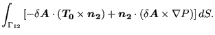, i.e. it is a direct function of the coordinates
and it is a direct function of the displacements, which are again a function
of the coordinates. One can write (vector- and matrix-denoting parentheses
have been omitted; it is assumed that the reader knows that  and 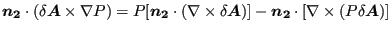 are
vectors,
and 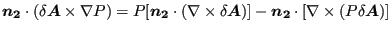 are
vectors,  and
and  are matrices and that 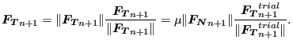 and 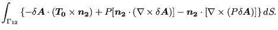 are potentially vectors):
are matrices and that 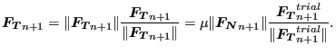 and 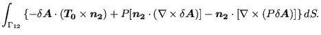 are potentially vectors):
| 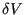 | (430) |
The governing equation for static (linear and nonlinear) calculations is 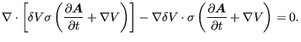, which leads to
| 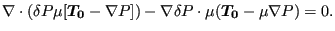 | (431) |
or
| 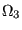 | (432) |
where
| 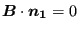 | (433) |
Since for linear applications 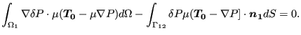 and 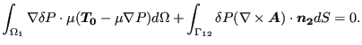, the above equations reduce in that case to
| 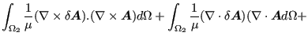 | (434) |
or
Consequently one arives at the equation:
For the speed-up of the calculations it is important to perform the
calculation of the term
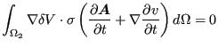 on element
level and to calculate the term
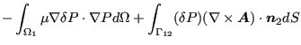 before
multiplying with the last term in brackets. Furhermore,
should be calculated by solving an equation system
and not by inverting  .
.
For special objective functions this relationship is further simplified:
For eigenfrequencies as objective function one starts from the eigenvalue equation:
| 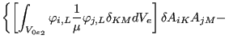 | (437) |
from which one gets:
| 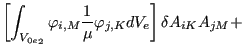 | (438) |
Premultiplying with 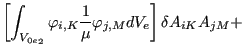 and taking the eigenvalue equation and the normalization of the eigenvectors
w.r.t.  into account leads to
into account leads to
Notice that this is the sensitivity of the eigenvalues, not of the eigenfrequencies (which are the square roots of the eigenvalues). This is exactly how it is implemented in CalculiX: you get in the output the sensitivity of the eigenvalues.
Subsequently, one can derive the eigenvalue equation to obtain the derivatives of the eigenvectors:
If s is the orientation in some or all of the elements, the term 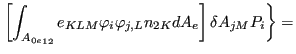 is in addition zero in the above equations.
In CalculiX, G is defined with the keyword *OBJECTIVE, s is defined with the keyword DESIGNVARIABLES and a sensitivity analysis is introduced with the procedure card *SENSITIVITY.
If the parameter NLGEOM is not used on the *SENSITIVITY card, the calculation of 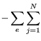 does not contain the large deformation and stress stiffness, else it does. Similarly, without NLGEOM is calculated based on the linear strains, else the quadratic terms are taken into account.
If the objective function is the mass,
the shapeenergy or the displacements a *STATIC step
must
have been performed. The displacements  and the stiffness matrix
and the stiffness matrix  from
this step are taken for
from
this step are taken for  and
and  in
Equation (436) (in the presence of a subsequent sensitivity
step
in
Equation (436) (in the presence of a subsequent sensitivity
step  is stored automatically in a file with the name jobname.stm). If the static step was calculated with NLGEOM,
so should the sensitivity step in order to be consistent. So the procedure
cards should run like:
is stored automatically in a file with the name jobname.stm). If the static step was calculated with NLGEOM,
so should the sensitivity step in order to be consistent. So the procedure
cards should run like:
*STEP *STATIC ... *STEP *SENSITIVITY ...
or
*STEP,NLGEOM *STATIC ... *STEP,NLGEOM *SENSITIVITY ...
If the objective functions are the eigenfrequencies (which include the
eigenmodes), a *FREQUENCY step must have been
performed with STORAGE=YES. This frequency step may be a perturbation step, in which case it is
preceded by a static step. The displacements  , the stiffness matrix
, the stiffness matrix  and
the mass matrix
and
the mass matrix  for equations (439) and (440) are
taken from the frequency step. If the frequency step is performed as a
perturbation step, the sensitivity step should be performed with NLGEOM, else
it is not necessary. So the procedure cards should run like:
for equations (439) and (440) are
taken from the frequency step. If the frequency step is performed as a
perturbation step, the sensitivity step should be performed with NLGEOM, else
it is not necessary. So the procedure cards should run like:
*STEP *FREQUENCY,STORAGE=YES ... *STEP *SENSITIVITY ...
or
*STEP *STATIC ... *STEP,PERTURBATION *FREQUENCY,STORAGE=YES ... *STEP,NLGEOM *SENSITIVITY ...
or
*STEP,NLGEOM *STATIC ... *STEP,PERTURBATION *FREQUENCY,STORAGE=YES ... *STEP,NLGEOM *SENSITIVITY ...
(a perturbation frequency step only makes sense with a preceding static step).
The output of a sensitivity calculation is stored as follows (frd-output only if the SEN output request was specified underneath a *NODE FILE card):
For TYPE=COORDINATE design variables the results of the target functions MASS, SHAPE ENERGY, EIGENFREQUENCY and DISPLACEMENT (i.e. the sum of the squares of the displacements in all objective nodes) are stored in the .frd-file and can be visualized using CalculiX GraphiX.
For TYPE=ORIENTATION design variables the eigenfrequency sensitivity is stored in the .dat file whereas the displacement sensitivity (i.e. the derivative of the displacements in all nodes w.r.t. the orientation) is stored in the .frd-file. The order of the design variables is listed in the .dat-file. All orientations defined by *ORIENTATION cards are varied, each orientation is defined by 3 independent variables. So for n *ORIENTATION cards there are 3n design variables. The sensitivity of the mass w.r.t. the orientation is zero.
Finally, it is important to know that a sensitivity analysis in CalculiX only works for true 3D-elements (no shells, beams, plane stress, etc...).